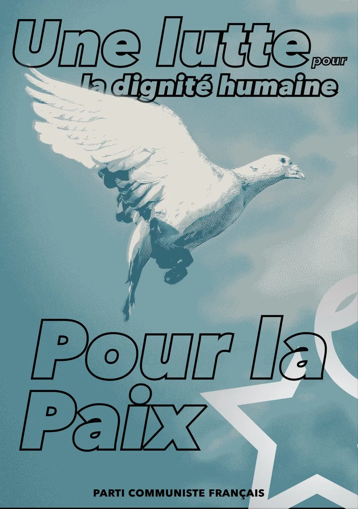

Publication sur X
Le 8 Mai. Faire vivre la mémoire antifasciste
Date de publication sur X · 5 mai 2026
Repères éditoriaux
Nous avons appelé à faire vivre la mémoire des résistants, des communistes et de toutes celles et ceux qui ont combattu le nazisme.
Texte de la publication sur X
Le 8 mai 1945, le fascisme capitulait. Pas grâce au hasard ni aux discours : grâce aux résistants, aux communistes, aux peuples qui ont payé le prix du sang.
81 ans plus tard, l’antifascisme n’est pas une commémoration. C’est une ligne. 🚩 https://t.co/A5JKbyIv9X

Sources
PCF 79 · @79Parti sur X · AR-0005-TW-2051658427072397799
À lire aussi · À Châteaubriant, l’hommage du 22 octobre aux fusillés · Le lien d’origine
Publications associées
- 8 Mai à Niort. L’appel place des Martyrs de la Résistance · Horaire annoncé sur X
- Le 8 Mai à Niort. L’hommage de Frédéric Giraud · Compte rendu vidéo du 8 Mai